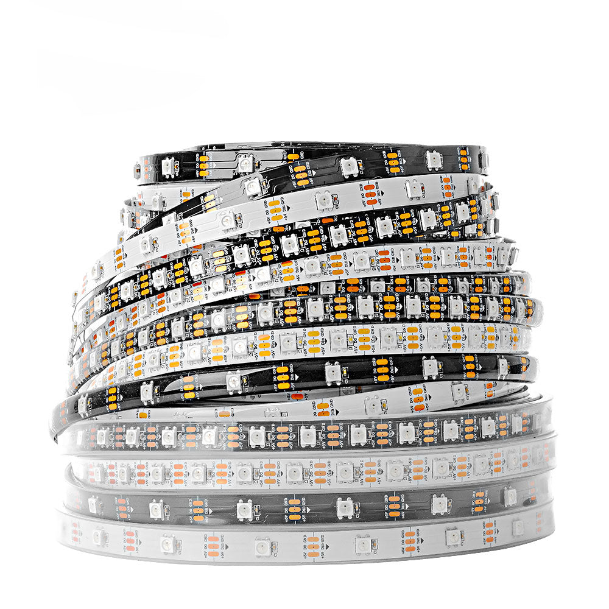
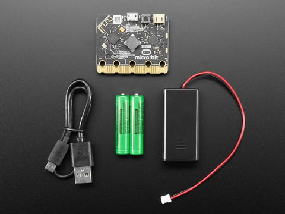
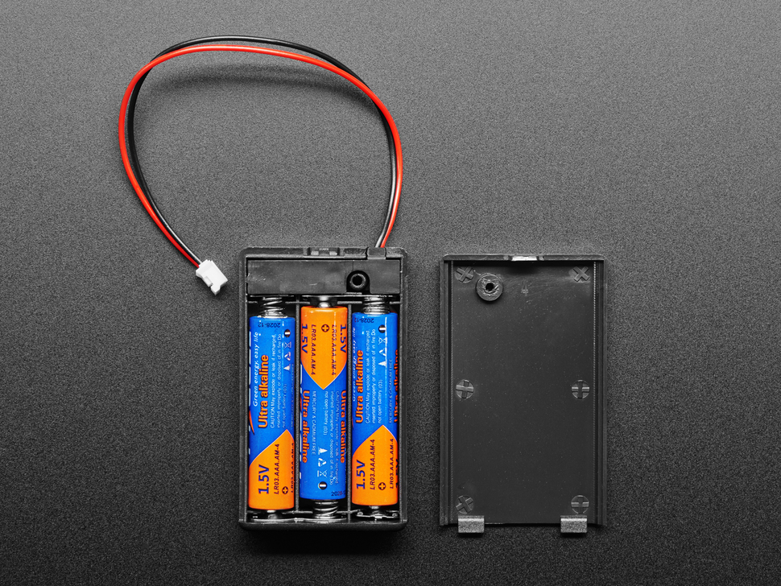
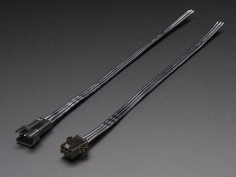
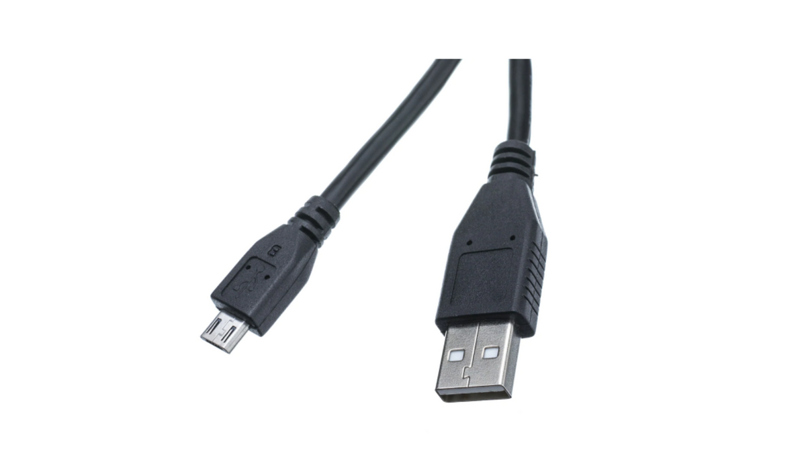
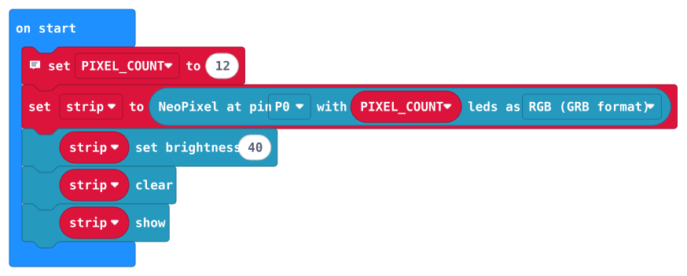
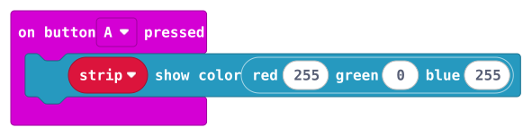
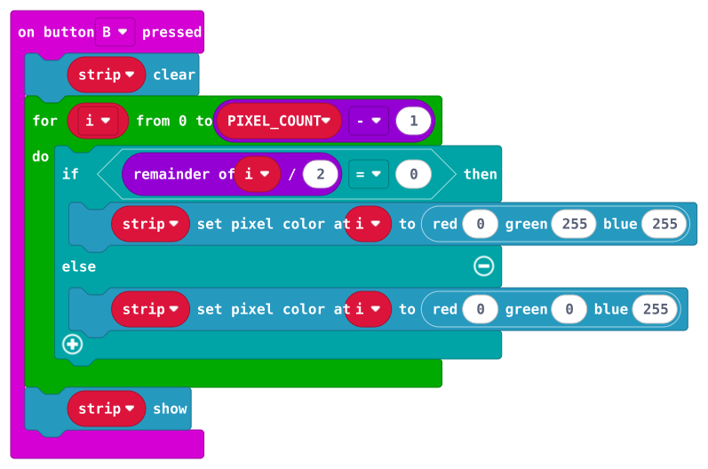
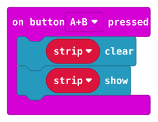

Physical connection
Choose a suitable edge breakout or secure, insulated connections to the micro:bit’s P0 and GND. Check existing equipment. The three-pin JST connector belongs between the harness and strip.
Mentor preparation · Thursday, September 24
Build one tabletop demonstration and one matching spare. Students will use the buttons, trace power and data, and explain what makes the lights respond.
Before assembly
The order identifies the strip and harness materials. It does not identify a dedicated micro:bit P0/GND connector or a logic-level interface. Confirm the physical connection and the delivered strip’s data-voltage requirements before powering the harness.
This is a preparation guide. The complete system still needs a physical bench test. A resistor does not change the data signal’s voltage.
Read the interface check →01 · Gather
Keep each complete set together under one label, such as W-NP-01 and W-NP-02. These quantities cover two systems. Add hands-on sets only to match the supervised group size.
| Part | For two sets | What to check |
|---|---|---|
| Wearables micro:bit V2 | 2 | W-labeled boards; keep R-labeled Robotics boards separate. |
| WS2812B RGB strip | 2 × 12 pixels | Count pixels and use the marked cut line. Locate DIN and the arrows. |
| micro:bit 2×AAA holder | 2 | Use the Club Kit holder with the proper battery plug and polarity. |
| Switched 3×AAA pixel holder | 2 | Nominally 4.5 V with alkaline cells; verify suitability for the delivered strip. |
| Fresh AAA alkaline cells | 10 | Five per system. Keep battery chemistry consistent. |
| 330 Ω resistor | 2 | One in each data path, close to the first pixel. |
| 1000 µF, 6.3 V capacitor | 2 | One across each pixel supply; identify + and −. A 10 V rating is also suitable. |
| ALITOVE 3-pin JST-SM leads | 2 mating pairs | Verify +V / DATA / GND on both halves. These do not attach directly to the micro:bit. |
| P0/GND connection and data interface | One solution per set | Resolve before powering. Do not solder directly to the micro:bit. |
| Wire, heat-shrink, labels, mounting | For both sets | 22 AWG insulated wire, individually insulated joints, strain relief, and two nonconductive bases. |
Shared tools: multimeter, wire stripper, soldering iron and solder, suitable soldering workspace, heat-shrink tool, Windows laptop, USB data cable, and an iPad or phone for the backup video.
The capacitor and resistor match Adafruit’s power guidance. The capacitor’s negative side usually has a stripe; read its markings before assembly.
Product/reference photos, not our delivered inventory. Tap a photo to enlarge it. Compare the actual labels and kit list; appearance alone does not confirm electrical compatibility. These optional photos stay out of printouts.

Small board with A/B buttons, LED display, and gold edge pads. Keep W and R kit labels with their assigned boards.
Photo: Adafruit
Repeated square LEDs on flexible tape. Read the actual voltage, data arrow, and pixel density; variants look similar.
Photo: BTF-LIGHTING
Reference bundle shows board, micro-USB cable, and holder for two AAA cells. Compare with the delivered Club Kit.
Photo: Adafruit
Count three AAA positions. Example has a different connector; it does not establish the classroom wiring or compatibility.
Photo: Adafruit
Mating black plugs with a latch and three wire positions. Match the tested pin map, not wire colors alone.
Photo: Adafruit
Large USB-A end and small micro-USB end. Appearance cannot prove data support; test transfer with the actual cable.
Photo: BirdBrain / CreXoOrder reference · Checked September 21, 2026
The relevant Quantity Received cells were blank when checked. These are requested quantities, not confirmed inventory. Open Stauffer order rows 17–36 →
| Order row | Requested material | Quantity |
|---|---|---|
| 17 | BTF-LIGHTING strip · B088BPGMXB | 4 rolls; 600 pixels by the sheet description or 1,200 by the currently linked variant. |
| 18 | GeeekPi micro:bit V2 Club Kit · B0BGRRYXSG | 4 ten-board kits: 40 boards, 40 USB cables, 40 two-cell holders, and 80 included AAA cells. |
| 19–20 | Switched 3×AAA holders; additional AAA alkaline cells | 6 ten-packs = 60 holders; 2 hundred-packs = 200 cells. |
| 21–23 | BNTECHGO 22 AWG silicone wire | 3 × 100-foot spools; black, yellow, and one color unnamed in the sheet. |
| 24 | 330 Ω, ¼ W, 1% resistors | 1 hundred-pack. |
| 25 | 1000 µF, 6.3 V electrolytic capacitors · B0GBYCXDH8 | 2 packs. The linked 20-pack implies 40 capacitors if that variant was ordered. |
| 30 | innhom heat-shrink tubing | 1 × 650-piece assortment; check sizes. |
| 36 | ALITOVE JST-SM connectors · B071H5XCN5 | 3 twenty-set packs = 60 mating pairs; 15 cm, 20 AWG leads. |
Club Kit package contents · Capacitor pack size. No dedicated breakout, crocodile leads, or level shifter is listed in the populated Stauffer request. M3 hardware appears in rows 49–51, but its presence does not establish a tested electrical connection.
02 · Confirm the interface
Choose a suitable edge breakout or secure, insulated connections to the micro:bit’s P0 and GND. Check existing equipment. The three-pin JST connector belongs between the harness and strip.
The micro:bit uses approximately 3 V logic; the planned pixel holder provides nominally 4.5 V. Check the delivered strip’s input-high requirement against the controller’s output over the intended battery range.
If the signal does not meet that requirement, select a WS2812-compatible level-shifting interface. Its supply range, direction, enable pins, and grounds must match this system. A generic converter or a 5 V-only module is not automatically suitable for three AAA cells as they discharge.
The order does not prove direct-data compatibility. The diagram below shows an unresolved interface, not permission to omit it. A direct P0 connection is appropriate only after compatibility is established. Read Adafruit’s logic-level explanation →
03 · Trace the wiring
This is a functional map. The identified interface’s supply and enable pins must follow its own documentation. On a small screen, scroll the diagram sideways.
04 · Adult assembly
Count 12 pixels and find a marked cut line. The arrows point away from DIN. Verify the delivered product’s pads and voltage specification.
Use pad labels and a meter to identify +V, DATA, and GND end-to-end. Do not rely on wire color or connector gender. Label both halves; arrange the powered side with recessed contacts.
Join micro:bit GND, strip GND, and pixel-holder negative. Connect the pixel holder’s switched positive to strip +V. Follow the verified interface’s documentation for any additional connections.
Connect capacitor + to pixel +V and capacitor − to shared ground, close to the strip input. It sits across the supply, not in series with a wire.
Connect P0 through the chosen interface, then the 330 Ω resistor near DIN, then DIN. Use a direct connection only after the interface check.
Check for solder bridges and loose strands. Verify each connection against the labels. Check for a sustained +V-to-GND short; a capacitor can cause a brief meter indication. Confirm pixel +V is not joined to micro:bit 3V.
Insulate each exposed joint separately. Add strain relief to protect strip pads. Mount the board, holders, and strip on a nonconductive base with accessible buttons and switches.
With the holder disconnected from the harness, check its output polarity and voltage. Switch it off before reconnecting. Power the assembly only after inspection and the interface decision.
Keep signal wires short and use secure leads, following Adafruit’s connection guidance.
Adafruit · micro:bit lesson
Follow the pictured micro:bit lesson from parts through connections and software. Use its diagram to identify ground, positive supply, and data input.
Adapt for our build: this example uses a 24-pixel ring, P2, and the micro:bit’s 3V supply. Our starter uses 12 pixels and P0; follow our separate-supply wiring map and complete the interface check.
Open the illustrated lesson →
Open the printable lesson PDF →
Adafruit · strip close-ups
The “Data Flow Direction” and connection photos show how arrows identify the input end and how wires attach to a controller.
Different controller: these photos use Circuit Playground Express with A1 and VOUT. Use them for orientation and wire preparation; verify our actual connector pinout and use the micro:bit wiring map above.
05 · Program
Every pixel shows the same color.
Alternating colors show pixel order.
Clears the strip. Battery power remains connected.
Review the same starter in Blocks and JavaScript / TypeScript below. Both use 12 pixels on P0 at brightness 40/255, with the same button actions.
micro:bit Educational Foundation
Follow the editor demonstration: add the NeoPixel extension, place “set strip to NeoPixel…” in “on start,” then choose the pin, pixel count, and RGB format.
Open the video and step-by-step screenshots →
For our starter: P0, 12 pixels, RGB (GRB format), brightness 40. The article’s 3V wiring illustration differs from our separate pixel supply.
Microsoft MakeCode · teacher video series
Use this lesson to see programmable color and pattern ideas. Then review our four starter stacks below.
Watch on YouTube →
Open the teacher video series →
For Thursday: keep our A, B, and A+B controls and starting brightness. Check any tutorial wiring against the verified harness.
For Blocks, open the prepared project and choose Edit Code; the NeoPixel extension is included. For text, create a project in MakeCode for micro:bit, add Microsoft’s neopixel extension from Extensions, then paste the text below into JavaScript view. You can switch to Blocks afterward.
Set PIXEL_COUNT to the actual segment count. Use P0, RGB (GRB format), and brightness 40. The text equivalent of that strip format is NeoPixelMode.RGB. Check the product if colors are swapped.
Disconnect both supplies and the strip harness from the W-labeled micro:bit. Download using the USB data cable and wait until transfer finishes. Remove USB before reconnecting the inspected, unpowered system.
Starter · Blocks
These are the actual MakeCode blocks, saved here for review and printing. On a small screen, scroll each image sideways to read it.
Open editable Blocks project →Download all blocks (.svg)
Choose Edit Code in MakeCode to make your own copy. The simulator’s generic wiring illustration does not replace our physical wiring map.

PIXEL_COUNT to 12.strip to NeoPixel at P0 with PIXEL_COUNT LEDs as RGB (GRB format).strip set brightness 40.strip clear, then strip show.
strip show color: red 255, green 0, blue 255.
“Show color” updates the LEDs immediately.

strip clear.i from 0 to PIXEL_COUNT − 1, check whether the remainder of i ÷ 2 equals 0.i to RGB 0, 255, 255 (cyan). Otherwise set it to 0, 0, 255 (blue).strip show.
strip clear, then strip show.
Both blocks are needed to send the cleared colors to the LEDs.
In MakeCode, use Basic for “on start,” Input for buttons, Variables for strip and PIXEL_COUNT, Loops for the counter, Logic for if/else, Math for the remainder, and Neopixel / more for strip and RGB blocks. This starter converted to regular editable blocks without JavaScript-only blocks.
Starter · Text
This is the same program as the Blocks project, with additional setup comments. Copy it into MakeCode’s JavaScript view after adding the NeoPixel extension.
The download is source code to paste into MakeCode, not a compiled .hex file. Button logic was checked with simulated APIs; physical hardware testing is still required. Microsoft extension documentation.
// Add the Microsoft "neopixel" extension in MakeCode before pasting.
// W-labeled micro:bit only. Default: 12 standard GRB-order RGB pixels on P0.
// Bench-test on the completed, verified harness before student use.
let PIXEL_COUNT = 12
let strip = neopixel.create(DigitalPin.P0, PIXEL_COUNT, NeoPixelMode.RGB)
strip.setBrightness(40)
strip.clear()
strip.show()
input.onButtonPressed(Button.A, function () {
strip.showColor(neopixel.rgb(255, 0, 255))
})
input.onButtonPressed(Button.B, function () {
strip.clear()
for (let i = 0; i < PIXEL_COUNT; i++) {
if (i % 2 == 0) {
strip.setPixelColor(i, neopixel.rgb(0, 255, 255))
} else {
strip.setPixelColor(i, neopixel.rgb(0, 0, 255))
}
}
strip.show()
})
input.onButtonPressed(Button.AB, function () {
strip.clear()
strip.show()
})
06 · Bench test
Use the exact board, strip, harness, and batteries that will stay together on Thursday. These checks support a classroom rehearsal; they do not replace component specifications. On-screen checkmarks are temporary—print or photograph the completed record.
Keep this preview on the table. Brightness 40 is the starting point; it does not establish electrical compatibility or a safe current budget.
07 · Back up the demonstration
Test and label the second complete system independently. Keep its board, strip, harness, and two holders together. Replace a failed set as a whole and put it in INSPECT.
Show the set label, both power supplies, shared ground, data path, and DIN arrow. Demonstrate A, B, A+B, then shutdown. Save the video on the presentation device and check playback without internet.
On Thursday, display this functional diagram beside a photo of the actual tested wiring. Students operate buttons and explain the system; an adult handles hardware faults.
{kind=link}